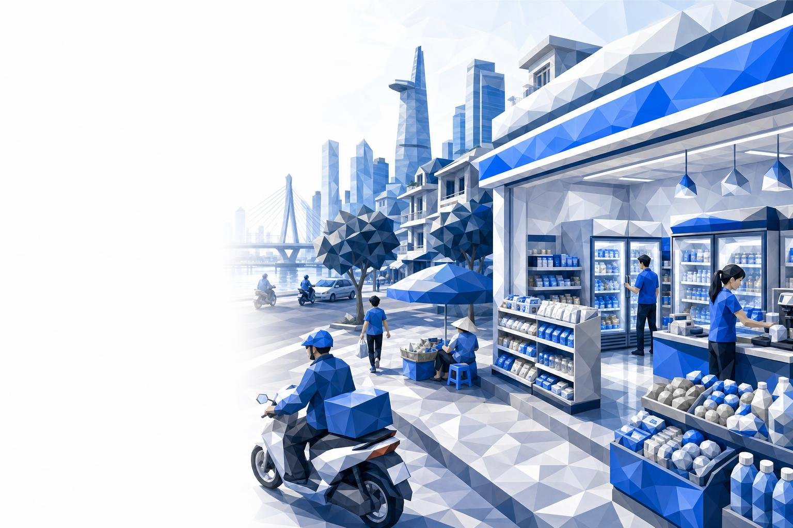

市場スキャン
ベトナムコンビニエンスストア空白領域
都市部の好立地が既に押さえられた今、日本・韓国のコンビニエンスチェーンがベトナムで勝ち得る領域はどこに残されているのか。
2027
Know first.
Move first.
Move first.

都市部の好立地が既に押さえられた今、日本・韓国のコンビニエンスチェーンがベトナムで勝ち得る領域はどこに残されているのか。
本レポートは2つの証拠系統に基づきます。現地語の机上調査、企業・チャネルの開示情報、アナリストによる統合分析からなるアナリスト調査と、統計当局、上場企業の開示書類、三角測量による推計からなる二次アンカーです。定量的な主張にはすべて出典タグを明記しています。
緊張関係：ベトナム2大都市以外では、約8,000万人が200店舗未満のチェーンコンビニを共有しています。それでも先行したチェーンは赤字が続いています。
以下の各回答は後続の章で論証しています。確度は、当社推計ではなく公表データにどの程度依拠しているかを示します。
| 事業者の問い | 当社の回答 | 決め手となる証拠 | 確度 |
|---|---|---|---|
| チャネルの規模と成長性は | 小規模だが高成長：チェーンコンビニは小売商品販売額の約0.25%を占め、小型店は2019年以降3倍に増加 | 追跡対象の小型店は2026年に9,671店、2019年は3,007店 [Q&Me 2026] | |
| 残る出店余地は | ホーチミン市では乏しい。公表済みの計画だけで、2030年基準シナリオの増加分の半分から全量を既に占める | GS25は2027年までに700店を目標 [B-Company Mar 2025]、ファミリーマートは300〜1,000店 [FamilyMart Sep 2026] | |
| どこが飽和し、競合が密集し、空いているか | 飽和：ホーチミン市。競合密集：ハノイ中心部。空き：北部環状地帯と中部沿岸 | 2大都市以外では人口100万人当たりチェーン店2.3店 [Kira estimates] | |
| コンビニかミニスーパーか | 両者の中間となる食品主導型の100〜150 m²の店舗。純粋なコンビニでは現状の売上で賃料を賄えない | 損益分岐は日商約VND 28〜38 m、実測は約VND 24〜26 m [Kira estimates] | |
| どの階層から着手し、何が中止基準か | ハノイ近郊の新興住宅地とハイフォン。9か月目にパイロット店が日商VND 22 mを下回れば中止 | ステージゲート方式の計画、パイロット判断までUSD 6〜8 m [Kira estimates] |
2つの算出経路：約1,450店×1店当たりVND 8.5〜9.5 bn、およびサークルKの収益シェア48%(2023年末)を店舗数の伸びで外挿する方法です。両者からVND 10〜14 trnが得られます。
公表されているチャネル別シェアは対象範囲により異なります。食料品のみの系列では近代小売は約20%、小売全体の系列では約27%です[Insight Asia 2025]。
食料品支出の5分の4は、依然として市場と家族経営の商店を経由しています。伝統小売は2010年から2024年にかけて89%から80%へ低下しました[SHS Dec 2025]。一般小売は今もFMCG売上の最大81%を占めます[B-Company May 2026]。
2026年の課税方式の切り替えが商店の基盤を細らせます。2026年1月1日に一括課税が廃止されました。約140万店のうち15〜20%が3年間で閉店または統合すれば、20万〜28万の販売拠点が消えます[B-Company May 2026]。
生鮮食品は引き続き生鮮市場に残ります。消費者の85%は肉と魚介を生鮮市場でのみ購入しており(調査は [SHS Dec 2025] 経由)、移行はまず包装食品と調理済み食品に及びます。
この店舗調査はコンビニとミニスーパーを合算しています。次章以降で両者を分離します。
2022年以降の新規店舗の3分の2は地方の省が占めました。2大都市以外の店舗数は2,928店から4,933店へ増え[Q&Me 2026]、中部とメコンではバッハ・ホア・サイン(Bach Hoa Xanh)が牽引しました。
2026年は最も伸びが速い年でした。12か月で1,865店が増え、そのほぼすべてがミニスーパーです[Q&Me 2026]。
基準シナリオは年+15%で、2022〜26年の+11%に北部への出店加速を加えた水準です。下振れシナリオは+8%、上振れシナリオは公表目標をすべて達成した場合の+23%です。
| チェーン | 公表された増加数 | 根拠 |
|---|---|---|
| GS25 | +300 to +380 | 2027年までに700店 [B-Company Mar 2025] |
| ファミリーマート | +130 to +830 | 2031年度までに300店、または5年で1,000店 [FamilyMart Sep 2026] |
| ミニストップ(イオン) | ~+120 | 2026〜30年に300店体制 [TCTC Jul 2026] |
| サークルK、セブン-イレブン | 目標なし | サークルKは2024年以降約500店で横ばい [Q&Me 2026] |
集中度の高いチャネルです。首位は拡大を止め、挑戦者は成長を買い、地場ブランドは小規模にとどまります。
外資5ブランドがチェーン店舗の91%を保有しています(約1,450店のうち1,322店)[Kira estimates from Q&Me 2026]。サークルK単独で、2023年末時点のチャネル収益の48%を占めました[VNS Jan 2025]。
成長の担い手は挑戦者に移りました。2026年3月までの1年間で、GS25は+82店、ファミリーマートは+32店、セブン-イレブンは+18店でした。一方、サークルKは約500店で横ばい、ミニストップは197店から184店に減少しました[Q&Me 2026]。
他の外資チェーンも同じ傾向です。セブン-イレブンは2023年に約USD 4 m、ミニストップは約USD 2 m、ファミリーマートは約USD 0.4 mの赤字でした。黒字を計上したのはサークルKのみです(2022年にUSD 4 m超)[VNS Jan 2025]。
1店舗の店舗単体モデルです。売上、粗利、そして2大固定費が占める額を示します。
日商VND 24〜26 mが店舗網の標準水準です。GS25(2024年)、セブン-イレブン(2023年)、サークルK(2022年)はいずれも、1店当たり年間VND 8.8〜9.4 bnとなります[Kira estimates]。
2つの固定費が店舗を赤字に沈めます。賃料と24時間体制の人件費だけで、光熱費の前に売上の19%を占めます。粗利率20〜25%[VNS Jan 2025]では両方を賄えません。
各棒は店舗EBITDAが黒字に転じる日商水準を示します。破線は現在のチェーン店舗の平均売上です。
賃料が最大の変動要因です。2大都市の1階路面店の平均賃料はUSD 53〜58 /m²です[Savills H1 2025] [CBRE HCMC 2025]。ハノイの一等地の通りでは、募集賃料はUSD 120〜180に達します[B-Company Hanoi 2026]。
地方の省と新興住宅地の賃料は、その3分の1の水準です。ダナンの小売募集賃料は約USD 30 /m²です[CBRE Da Nang Q1 2026]。
ホーチミン市はタイのような意味で満杯ではありませんが、規模を持つブランドはすべて既に進出し、同じ高賃料の通りに集まっています。
| チェーン | ホーチミン市 | ハノイ | ベトナムその他地域 | 合計 |
|---|---|---|---|---|
| サークルK | 223 | 191 | 86 | 500 |
| GS25 | 196 | 46 | 76 | 318 |
| ミニストップ | 184 | 0 | 0 | 184 |
| ファミリーマート | 172 | 0 | 0 | 172 |
| セブン-イレブン | 139 | 4 | 5 | 148 |
| B's Mart | 40 | 0 | 0 | 40 |
| K-market | 19 | 33 | 14 | 66 |
| Cheers | 19 | 0 | 3 | 22 |
| 合計 | 992 | 274 | 184 | 1,450 |
飽和：ホーチミン市。992店で全国の68%を占め、5ブランドが各139〜223店を展開しています[Q&Me 2026]。合併後の人口1,400万人で換算すると人口100万人当たり約71店で、タイの密度の3分の1です[Kira estimates]。
競合密集：ハノイ。274店のうち70%がサークルKです。空き：その他すべての地域で、約8,000万人に対し184店にとどまります。
2024年にハノイが提供していた好機は閉じつつあります。2026年10月の規則変更は、条約適用の投資家にとって別の好機を開きます。
GS25のハノイ初期店舗は、開業数週間で日商約KRW 5 m、およそVND 90 mを売り上げました[Sateconomy Apr 2025]。好調ですが、開業月の売上は後退します。
需要だけを見れば2大都市が上位に来ますが、競合、賃料、物流を加えると、順位は北部へ、そして都市の中心部の外へ移ります。
| 地域 | 需要 | 人口密度 | チェーン余地 | ミニマート余地 | 賃料 | 物流 | 平均 |
|---|---|---|---|---|---|---|---|
| ハノイの新興住宅地と外環部 | 5 | 4 | 4 | 2 | 4 | 5 | 4.0 |
| ハイフォン | 4 | 3 | 5 | 3 | 4 | 4 | 3.8 |
| バクニン | 3 | 3 | 5 | 3 | 4 | 5 | 3.8 |
| クアンニン | 3 | 3 | 5 | 3 | 4 | 3 | 3.5 |
| ハノイ中心部の区 | 5 | 5 | 2 | 2 | 1 | 5 | 3.3 |
| ドンナイ | 4 | 2 | 4 | 2 | 4 | 4 | 3.3 |
| ダナン | 3 | 3 | 4 | 3 | 4 | 2 | 3.2 |
| ホーチミン市中心部 | 5 | 5 | 1 | 1 | 1 | 5 | 3.0 |
| カントー | 2 | 2 | 5 | 1 | 4 | 2 | 2.7 |
北部は所得水準が高い地域です。1人当たり月間所得は、ハノイがVND 8.37 m、ホーチミン市が8.06 m、ハイフォンが7.14 m、クアンニンが6.92 m、ダナンが6.22 m、全国平均が6.0 mです[GSO KSMS 2025]。
ハノイ以外ではチェーン店はほぼ存在しません。サークルKの地方店86店とGS25の地方店76店は、大半が南部と中部にあります[Q&Me 2026]。
魅力度は需要と人口密度の平均、勝ち得る力は競合余地、ミニマート余地、賃料、物流の平均です。
両方の基準を満たすのは2地域です。ハノイの新興住宅地とハイフォン(人口470万人)です[Admin merger 2025]。新興住宅地の開発事業者は、32の都市区域で約65万人の居住者を抱えています[Vinhomes 2025]。
大都市の中心部は魅力的ですが、勝ち目がありません。店舗を買収しない新規参入者にとっては、参入の余地がないためです。
ミニマートチェーンは1日に2〜3店を出店して生鮮食品を販売し、バッハ・ホア・サインの日商はコンビニ1店の3〜4倍に達します。
中心となる論点は、コンビニとミニスーパーの業態が購買単価、利益率、商圏でどう異なるか、そして新規参入者がどちらを構築すべきかです。
| 従来型コンビニ | 食品主導型の近接店舗 | ミニスーパー | |
|---|---|---|---|
| 面積 | 65-150 m² | 100〜150 m² + 飲食席 | 150〜300 m²(標準) |
| 主力商品 | 飲料、菓子、雑貨 | 温かい食事、ベーカリー、飲料、日常の買い足し | 生鮮野菜、肉、主食・日用食品 |
| 営業時間 | 24時間 | 午前6時〜深夜0時、大学構内は24時間 | 午前7時〜午後10時 |
| 日商 | VND 24-26 m | 目標 VND 30〜40 m | VND 83〜100 m(BHX) |
| 粗利率 | 20-25% | 自社調理食品で28〜32% | 20%台前半、廃棄ロスが大きい |
| 商圏 | オフィス、学生、夜間の繁華街 | 新興住宅地の街区、大学構内、交通結節点 | 住宅地の区 |
| 環状地帯での主な競合 | 現時点ではなし | 買い足しのみミニマート | WinMart+, BHX |
| 当社の評価 | 賃料に縛られる | 環状地帯に適合 | 競争が過密 |
食品は2つの改善手段を同時に押し上げます。調理済み食品は包装食品より利益率が高く、ミニマートが取り込めない昼食と夕方の来店を生み出します。
裏付けとなる事例があります。GS25のハノイでの売れ筋は自社ブランド商品と韓国式の食事でした[Sateconomy Apr 2025]。サークルKも、調理食品と飲食席で差別化しています。
家族経営の商店の基盤を細らせる同じ諸力が、従来型コンビニのコストを押し上げます。この点でも、飲料より食品に有利に働きます。
| 諸力 | 新規チェーンへの影響 | 根拠 | 変化の内容 |
|---|---|---|---|
| 世帯課税の正規化 | 約140万店のうち15〜20%が3年で閉店または統合する可能性 [B-Company May 2026] | 買い足し支出がより多く正規店へ移る | |
| 都市部の所得成長 | 都市部の1人当たり所得は月VND 7.4 m、2025年は+6.7% [GSO KSMS 2025] | 食事とブランド商品への上位移行が進む | |
| 新興住宅地での居住 | 1つの開発事業者の32都市区域に約65万人が居住 [Vinhomes 2025] | 小売が計画された、高密度で囲い込める商圏 | |
| デリバリーアプリ | フードデリバリーは2025年に約USD 3 bn、+15% [B-Company Delivery 2025] | 食事の需要を奪い合う一方、店舗は受け取り拠点になり得る | |
| 加糖飲料の物品税 | 2027年1月から8%、2028年から10% [Excise Law 2025] | 飲料主導の購買構成を圧迫する | |
| 人件費 | 第I地域の最低賃金は月VND 5.31 m、2026年は+7.2% [Decree 293/2025] | 24時間営業のコストを押し上げる |
旧政令09号の下では、コンビニとミニマートは小規模店舗の免除対象となったことがありませんでした。今回の条約に基づく免除は、20年ぶりの実質的な門戸開放です。
| 投資家の出身国 | 条約 | 需給審査上の位置づけ | 政令342号の扱い | 意味するところ |
|---|---|---|---|---|
| 日本 | CPTPP | 2026年10月18日から免除 | 自社支配の会社は、省レベルの需給審査なしで出店できる | |
| EU、英国の投資家 | EVFTA, UKVFTA | 免除 | 日本と同じ扱い。欧州資本のフランチャイザーに関係する | |
| 韓国 | VKFTA, RCEP | 明記された条約に含まれない | 外資系店舗には需給審査が適用される。GS25はベトナム資本70%の合弁会社を通じて運営 | |
| 現地資本過半の合弁会社またはマスターフランチャイジー | n/a | 出資比率による | セブン-イレブンのフランチャイジーはベトナム資本100%。取り扱いは弁護士に確認 |
店舗の営業許可は省の人民委員会が発行します。ENTが適用される場合、その審議会の審査期間は20営業日です[Legal alerts Sep 2026]。
500 m²未満で100店を超える店舗網は、2つの省庁による安全保障上の協議の対象となります[Legal alerts Sep 2026]。第3波の前に備える必要があります。
北部環状地帯への4つの参入経路を、コンビニの展開を左右する要素で評価しました。評価は、先行参入の事例と新ルールに基づく当社の判断です[Kira estimates]。
| 参入経路 | 50店到達までの速度 | 業態の支配権 | リスクにさらされる資本 | 立地の確保 | 規則との適合(日 / 韓) |
|---|---|---|---|---|---|
| ベトナム企業グループへのマスターフランチャイズ | パートナーが店舗を運営 | ロイヤルティ型 | 日韓とも適合 | ||
| 新興住宅地の開発事業者との合弁会社 | 開発区域内の区画 | 現地資本過半の場合は日韓とも適合 | |||
| 自社法人 + 開発事業者との出店区画協定 | パイロットゲートまでUSD 6〜8 m | 日本は可、韓国は不可 | |||
| 地域チェーンの買収 | 対象が少ない | 取引の承認が必要 |
日本の参入者：政令342号に基づく自社法人とし、北部の新興住宅地の開発事業者から専用の出店区画協定を得ます。食品業態とデータの支配権を維持できます。
韓国の参入者：開発事業者との現地資本過半の合弁会社とします。GS25が70%出資のパートナーと用いた構造です[MT Oct 2025]。
結論が変わる条件：50店超の地域チェーンが適正価格で売りに出れば、買収が第一の選択肢になります。
各条件には、パイロットが最初の9か月で実施できる検証があります。確度の低い条件が2つあるため、計画は段階的に進める必要があります。
| 成立すべき条件 | 当社の確度 | 現時点の根拠 | 検証方法 |
|---|---|---|---|
| パイロット店が9か月目に日商VND 30 m以上を維持する | 店舗網の標準は24〜26。GS25ハノイは開業時に約90 [Sateconomy Apr 2025] | 5〜8店、2クラスター。週次の減衰を追跡 | |
| 賃料が売上の10%以下 | 目標売上ではUSD 25〜35 /m²以下を意味する [Kira estimates] | この条件内で15件の出店意向書を締結 | |
| 食品とベーカリーが売上の30%以上 | カテゴリー別の公表データなし。ハノイでは自社ブランドの食品が最も売れた | 1号店の前にセントラルキッチン提携先で試行 | |
| 1か所の物流センターが24か月で25店以上に供給する | ハノイとハイフォンは1本の高速道路の回廊を共有 | 3PL事業者の見積りを取得したクラスター計画 | |
| 政令342号の下で営業許可が期限どおりに下りる | 2026年10月18日から新規則。運用はなお定着の途上 [Legal alerts Sep 2026] | 2027年第2四半期までに最初の店舗許可を取得 | |
| ミニマートチェーンが同じ街区を先に押さえない | WinMart+は2026年1〜5月に北部で339店 [Masan Jun 2026] | 開発事業者から開発区域内の専用区画を確保 |
2028年までの発生可能性と計画への影響に基づき、10のリスクを配置しました。深刻度はスコアではなくセルの濃淡で示しています[Kira estimates]。
4つのゲートはそれぞれ、予算と、事業として測定できる検証基準を備えています。フランチャイズ形式のGS25店舗の予算はVND 2 bn未満です[Brands Vietnam]。当社は、厨房と飲食席を備えた食品主導型店舗にVND 2〜3.5 bn、これに損益分岐までの赤字と少人数の現地チームの費用を見込んでいます[Kira estimates]。
| ゲート | 実施内容 | 予算 | 期間 | 実行・中止の判定基準 |
|---|---|---|---|---|
| G0 · 立ち上げ | 法人または合弁会社の設立、許可取得の経路、ハノイの新興住宅地とハイフォンで30区画の候補確保、食品セントラルキッチンの提携先 | USD 1.5-2.5 m | 2026年Q4〜2027年Q2 | USD 35 /m²以下で出店意向書15件以上、許可取得の経路を確認 |
| G1 · パイロット | 2クラスターで食品主導型店舗5〜8店、自社ブランドの食事とベーカリー | USD 4-6 m | 9〜12か月 | 9か月目に平均日商VND 30 m以上、食品が売上の30%以上。VND 22 m未満なら中止 |
| G2 · クラスター | 40〜60店、物流センター1か所、フランチャイズのパイロット | USD 10-15 m | 18か月 | 店舗の70%以上でEBITDAが黒字、物流費が売上の3%以下 |
| G3 · 拡大 | 150〜300店、クアンニンとバクニンを追加、ホーチミン市は買収のみ | USD 25-40 m | 2029-2031 | 店舗網全体のEBITDAが黒字、100店超で安全保障上の協議を通過 |
本レポートは2つの証拠系統を三角測量しています。数値に出典名のタグ(例：[Q&Me 2026]、[GSO 2025])が付されている場合、基礎データは当該出典に由来し、完全な引用は以下に示します。[Kira estimates]が付されている場合は、KIRAのアナリストが、開示された入力値(開示書類、店舗調査、政府データ)から、当該ページに示した手法で導出したものです。タグ付き数値の約20%はKIRAによる導出、80%は外部出典の引用です。調査は2026年10月初旬までの机上調査のみで、店舗訪問やインタビューは行っていません。
出典索引(続き)。略称は、レポート全体を通じて本文中の角括弧内に示しています。
本レポートが、市場と今後の意思決定を見通す一助となれば幸いです。さらなる協議、個別調査、提携の機会については、弊社のリサーチチームまでお問い合わせください。
結論が条件付きである理由
南部は押さえられているが、依然として赤字です。チェーンコンビニの3分の2はホーチミン市に集中し[Q&Me 2026]、GS25は2024年に売上約VND 2 trnに対しVND 125 bnの赤字を計上しました[Znews Apr 2025]。
ハノイは開きつつあるものの、中心部は競合が密集しています。GS25、セブン-イレブン、ファミリーマートはいずれも2025〜2026年に参入し、対するサークルKは191店舗の基盤を持ちます[Q&Me 2026]。
空白領域は北部環状地帯(ハノイ近郊の新興住宅地、ハイフォン、クアンニン、バクニン)です。所得は上昇し、チェーン店はほぼ存在せず、政令342号により日本の投資家向けの需給審査は2026年10月18日から廃止されます[Decree 342/2026]。